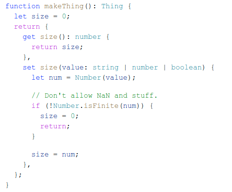
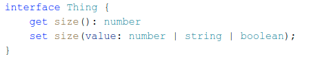

Фактически, в TS добавили синтаксис к интерфейсам / типам объектов для поддержки различных типов чтения / записи свойств.
Как мы видим, функция makeThing возвращает геттер и сеттер. С помощью геттера мы читаем нужную нам информацию с типом number. А с помощью сеттера мы записываем информацию в тех типах, в которых она может прийти.

